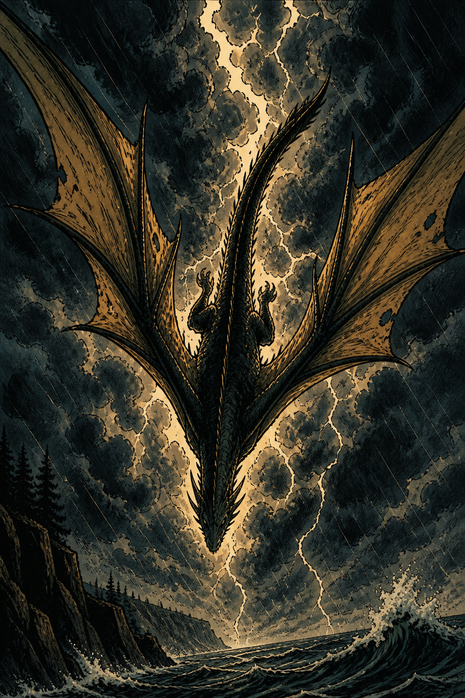
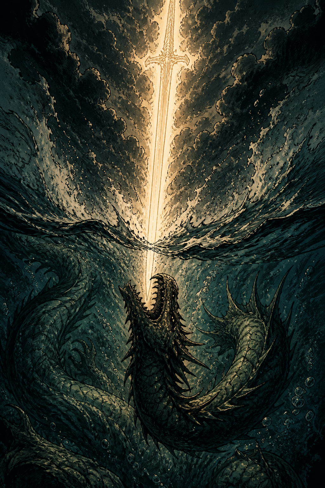
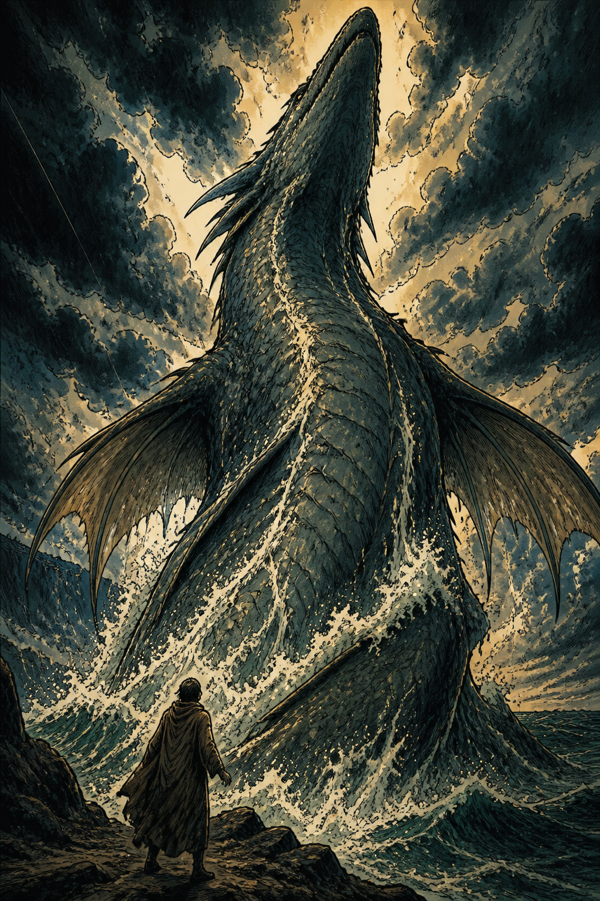
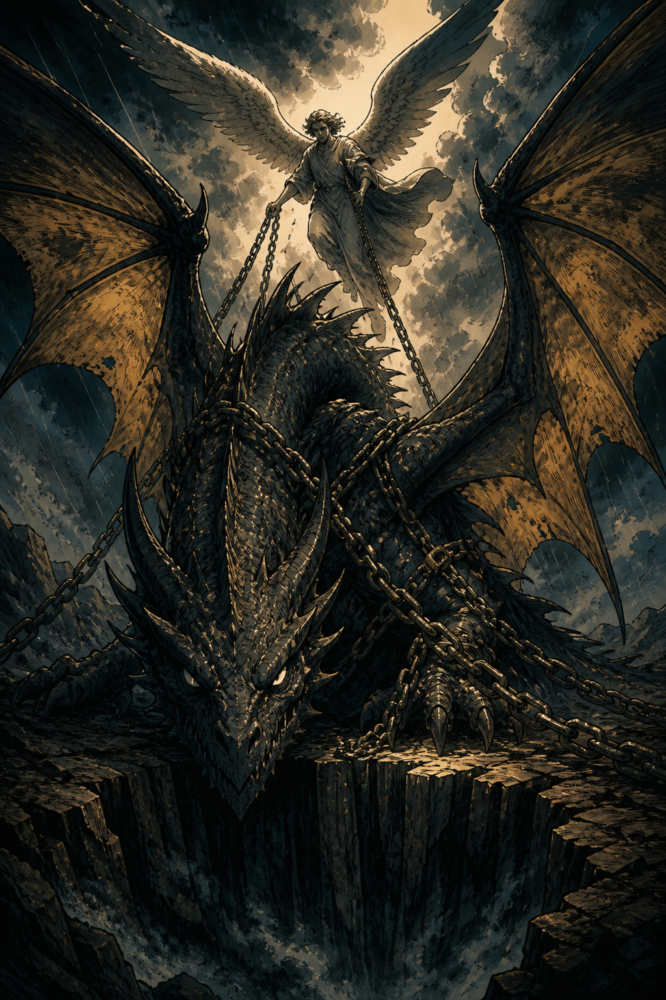

Biblical Imagery
The Dragon
Romans 16:20 · ESV
The God of peace will soon crush Satan under your feet.

1
The Dragon Thrown Down
Revelation 12:7–9; Genesis 3:15
- What names does John give the dragon (Rev 12:9)?
- How does Genesis 3:15 already promise this crush?

2
The Sword Against Leviathan
Isaiah 27:1
- What will the LORD do to Leviathan in that day?
- How is this different from Job 41’s ‘can you draw him out?’

3
Leviathan — Wonder and Crush
Job 41:1; Psalm 74:13–14
- Can anyone draw out Leviathan (Job 41)?
- Who crushed the heads of the sea-dragons (Ps 74)?

4
The Dragon Bound
Revelation 20:1–3
- What happens to the dragon in Revelation 20?
- What names are given to him when he is bound?